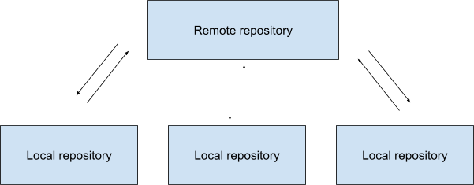
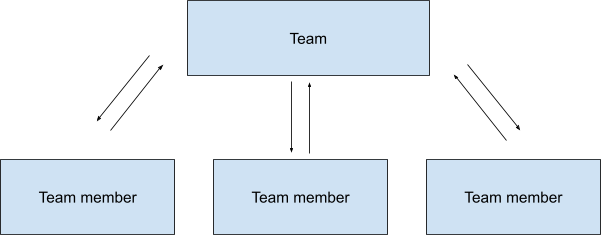

Through all these years that I’ve spent working in the IT industry, I learned that very often technology is not the answer to your problems. The issue that people try to solve with new and shiny tools usually can be solved by improving a process or introducing some good practices. Don’t get me wrong, I love tools and I think they can help a lot, but they are not a silver bullet or some kind of a magic remedy.
In addition to using tools, I’ve also learnt to look at them from a different perspective - as a source of inspiration for patterns, flows and solutions that I could apply in non-technical parts of my work. Thanks to that, sometimes I realize that processes and workflows can be organized in the same way as in a specific tool.
Technology is not the answer… but IT has the answer
My latest “epiphany” was about modelling work in my team after Git.
Despite its flaws and quirks, for me, Git is the most awesome tool that I have had a chance to learn during my time in the IT industry. I’m still amazed by its power and how it is simple and complicated at the same time. And how it’s free, and how most of the world of software development runs on it. Simply amazing!
Ok, now you know that I love this tool, but what does it have to do with organizing work in a team?
Let me start explaining the whole idea by giving you some context.
Too small to fail, too big to succeed
My current team, which is definitely the best one I’ve ever worked in, is 5
people - a director and 4 individual contributors (IC).
We are a distributed team - three ICs are based in Poland and one IC and the
director are based in the USA. On top of that, except for one IC, everyone works
from home. It means that we do a lot of work asynchronously. Even ICs in Poland,
who are in the same time zone, have different working hours due to their
professional and private responsibilities, such as meetings with other teams in
different time zones in the afternoon or evening, taking care of their families
or attending to their private matters.
We wanted our work to be both efficient and comfortable. But we noticed we were neglecting some of the things that would make it so. We needed someone to remind others about things we agreed on, to keep an eye on the Jira backlog, to record our decisions, to make sure all user support requests are taken care of, etc.
However, the idea of having a manager that would be a proxy between the director and the ICs didn’t seem reasonable given the size of our team.
I thought we were in a pickle, but then it hit me. Technology has the answer!
We are distributed like… Git!
If a tool can work efficiently in a distributed model, the team can as well. We are human beings, not pieces of software, but we need structures, processes and rules to work efficiently.
Everyone owns the team
When you work with Git, you usually have the following setup.

The remote repository is a central repository that is shared among team members.
It’s usually hosted on a platform like GitHub, Bitbucket or GitLab.
A local repository is a full copy of the remote repository. It’s hosted on a
machine of an individual user.
When I looked at this model, it struck me that basically our team is like Git .
The remote repository is the team itself. It’s the most important part and everyone contributes to it.
The hierarchy among ICs is flat - we don’t have a leader or a manager. Apart from official titles and seniority grades, we are all equal. Everyone has the same rights and obligations. We could say that everyone has the same stake in the team. Therefore, everyone has the exact same local copy of the remote repository.

A local repository allows you to work independently. Even if the central repository is offline or inaccessible, you can continue to work on your local copy and then push your changes to the central repository when you have access to it again.
It’s the same with our team. We are spread across different locations and time zones so throughout the week we don’t have many occasions to interact with one another. We do our work according to our schedules and then we synchronize with one another (push and pull our changes to the central repository) when we have a meeting, exchange messages on Slack or have a quick call.
Repos have branches, teams have domains
In our team, we share our technical and non-technical responsibilities equally. Every domain has its owner. For example, one person is the owner of backend technology, supporting users and making sure that we record our work in Jira. Being the owner of a domain doesn't mean that you do all the tasks related to it. Instead, you make sure that all work in this domain is done on time.
Each domain in our team is like a feature branch in Git. The branch owner makes sure everything in their branch is on track but can share work with other team members. When the owner delegates a task to a colleague, they create a sub-branch off the feature branch. These sub-branches represent individual tasks that team members handle, merging their contributions back into the feature branch and then by extension to the main branch.
Owners of feature branches also collaborate when their work overlaps and they merge changes between their branches. This ensures that all work fits together well. In the end, all the work from the feature branches and their sub-branches is merged into the central repository.
What about the director?
Of course, the director’s role differs from roles of ICs but the general idea of owning the team equally and having certain responsibilities still apply. He develops his feature branches and contributes to the central repository like everyone else by dealing with the team operations on a higher level, being an interface to other teams, making sure the team achieve their goals and that they are headed in the right direction.
The only difference is that being a director gives him additional privileges that he can use if needed. For example, if a merge conflict happens and it cannot be resolved automatically, the director will drive the manual resolution. But even then, it’s never solely his decision which conflicted change wins. He doesn’t simply overwrite an IC’s change and force push to the central repository. He always seeks to pick the resolution that’s best for the team.
Best practices
Every tool has best practices for using it. They are meant to guide you how you should use certain features to achieve a specific result or to avoid potential issues. The sole fact that a feature is available doesn’t mean you should use it all the time. Git is no different.
With great power comes great responsibility
For example, you cannot push your changes to the central repository if the
history is not in sync between your local repository and the remote repository.
But you can use the
–force
option to overwrite the history without any checks. It’s a powerful option but
it can cause many issues. Therefore, if you work on a branch with other people,
you shouldn’t force push. Same goes for working with your team members. If you
share a responsibility with other people, you should align, communicate and make
decisions together. You don’t force your point of view on them and overwrite
their decisions without talking to them first.
Why did I do it?
Centralized systems, like Subversion, store a separate history for each file in a repository. Git is a distributed version control system so it stores history as a graph of snapshots of the entire repository because it needs to have access to the “full story” all the time. This comes in handy, especially when your commit messages are detailed and informative. When you need to remind yourself what you did, when and why, you check the log of changes.
You should do the same in your team - record decisions and rules you agreed upon, take meeting notes, maintain internal documentation, etc. In a distributed team this type of history is invaluable. You can always refer to a source and get information that you need while your teammates who are experts in a particular area are fast asleep. Also, you can remind yourself why 6 months ago you decided to do something that now doesn’t make sense.
Communication is key
In Git, you should commit and push often. That way your teammates know what you’re up to at all times. I think it’s a bad practice to work on something locally for a long time and to not share your work. The later you get feedback from your peers, the worse the consequences may be. Imagine that you were asked to implement a new feature in an app. After you developed it for 2 months without sharing your code with anyone, someone finally had a look at it and told you that you misunderstood a basic requirement. If you had shared your work on a regular basis, you wouldn’t have wasted so much time (and money).
Same goes for your team. Sync with your teammates often. I’ve learnt throughout my career that communication is the key to success, especially in a distributed team. When you don’t work in the same physical location, sometimes you should even overcommunicate. I would compare it to audio descriptions. When you work in a distributed team, you need to put in some extra effort to inform others what is going on because they can’t see what you are doing.
It takes practice to communicate well the same way it takes practice to make good commit messages. In both cases, it’s not enough to do it often. Your messages must be clear, informative and to the point. Otherwise, you will create too much noise that won’t serve anyone.
Mark your milestones
In Git, you can use tagging to mark important points in the history of your codebase. This feature is often used for marking software releases.
In your team, you should also mark checkpoints. For example, you can divide the plan for a fiscal year into quarters and then mark a checkpoint when each quarter ends. This way you will be able to analyze the history of your team operations and see clearly what was done at specific points in time.
This one feature is off limits
I'm a huge fan of Git, but there's one thing that shouldn't be copied as a good
practice to your team - git blame.
Don’t get me wrong, the team must be aware of their issues and who or what
caused them. I just think that the name of this feature isn't fortunate.
In my team, we don't blame one another, mostly because we don't have to. Instead, we try to create a safe environment where everyone feels comfortable to admit openly to their mistakes, even before others discover them. We don't hide that we broke something and always inform others proactively about issues that may result from our actions. Very often, we even joke about our screwups. Our healthy work environment removes the need to blame others because everyone takes care of blaming themselves really well.
What’s next?
If you buy the analogy that I presented in this article and you think that the
Git model would work for you, don't wait. Just
git init your team.